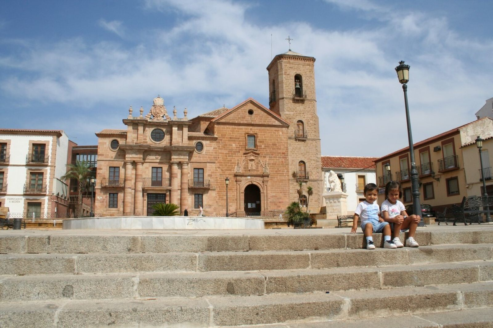
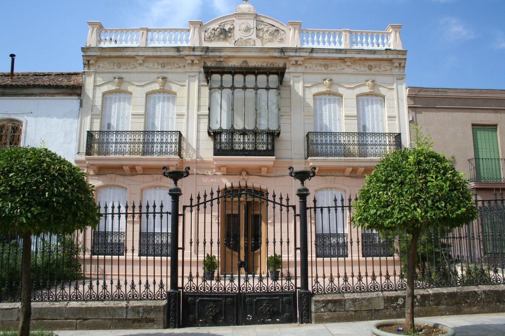

Připravuju si takhle další text. Baví mě to. Sbírám si data o jednom andaluském městečku, které skoro nikdo nezná, a které na mě včera vyskočilo při srovnávání cen nemovitostí ve Španělsku. (je to tam levný, hodně levný – v tom městečku myslím 😊).
Začala jsem z toho připravovat něco, co by dávalo hlavu a patu … a zasnila jsem se … psala jsem a tak to sem přináším 😊. Dokážete si to představit? Dneska chci psát o jednom místě, které ani spousta Španělů nezná. Je fantastické. Španělské, jižní, levné a mě by se tam líbilo žít.
Dokážu si to představit a myslím, že by se mi tam žilo celkem fajn.
Že bych si mohla dovolit mít lepší bydlení než mám tady za míň peněz, že bych ty peníze měla pro sebe a svoji rodinu.
Že bych měla parádní zdravotní péči a jako živnostník bych platila 80,- Eur za měsíc za všechno. Klidně první dva roky.
Začala bych nějakej svůj projekt. Malou kavárničku s knihkupectvím nebo květinářství s bylinkama nebo co já vím. Už jsem uvažovala i o práci v technických službách: pracují tam většinou mladí lidé, ale je tam mix, pracuje se venku, pečuje se o městskou zeleň – to by se mi asi líbilo. Měla bych čistou hlavu.
Že bych tam chodila do knihovny, jezdila na kole nebo na vespě, účastnila bych se slavností, byla bych aktivní v nějakém spolku, scházela bych se s přáteli a bylo by mi dobře.
Občas bych zajela autobusem nebo vlakem do Jaenu za kulturou a za dobrým vínem, občas bych autobusem nebo vlakem zajela do Madridu nebo míst v Kastilii a určitě bych si to nějak zaonačila, abych si mohla zajet občas k moři (až bych byla v důchodu, bylo by to extra jednoduchý díky IMSERSO, což je program pro španělské důchodce). Po Španělsku, nebo jinde, to záleží na tom, jak moc a jak bych chtěla pracovat. Bylo by tam spousta slunečných dní, tepla, na podzim bych neupadala do depresí, v zimě bych mohla chodit po okolních lesích – ráda chodím a tam by to krásně šlo. Je tam dobré víno, nejsem z těch co to dostatečně ocení, ale asi bych si občas sklenku dala, protože to chutná dobře. A dobře se to pije s přáteli. Jedla bych zdravě – měla bych neskutečnej výběr naprosto čerstvý zeleniny a ovoce včera sebraný o kousek dál. Každý den čerstvý džus ze sladkých mačkaných pomerančů. Ten nejlepší olivovej olej na světě. Vybírala bych si – jako to dělají místní – hmmm, tahle značka … jak na tom byli minulej rok? Jaká byla sklizeň? … v tom bych se vyžívala. Mnohem víc bych se pohybovala. Už prostě proto, že by mi venku nebyla zima. Bylo by tam čisto, bezpečno, lidé by se znali a oslovovali by mě jménem. Já bych k nim byla slušná a uctivá a oni by byli slušní a uctiví ke mně. Většina z nich…
No jo … no…
……
Andalusie jsou pro nás většinou bílé vesničky nebo přímořská letoviska, olivové háje, moře, býčí zápasy a flamenco.
Tohle místo je ale jiné.
Jmenuje se La Carolina a leží na severu provincie Jaén, na úpatí pohoří Sierra Morena, nedaleko přírodního parku Despeñaperros. Právě tudy po staletí vedla hlavní cesta mezi Madridem a Andalusií. Dnes okolo města prochází dálnice A-4 a z La Caroliny je to přibližně 50 minut do Jaénu, hodinu a půl do Granady, dvě a půl hodiny do Málagy a necelé tři hodiny do Madridu.
Na první pohled působí jako běžné andaluské městečko. Jenže není.
Jak město vypadá a čím je výjimečné?
La Carolina není typickou andaluskou vesnicí s křivolakými uličkami. Je to „urbanistický klenot Andalusie". Město bylo založeno v roce 1767 králem Karlem III. jako modelové město osvícenství. Má fascinující pravidelný šachovnicový půdorys s širokými, rovnými bulváry a velkými náměstími, což v této části Španělska působí téměř „americkým" dojmem. Díky tomu je zde pohyb městem i parkování velmi snadné.
Obyvatelé a historie, která nás spojuje
Město má přibližně 14 700 obyvatel (tzv. carolinenses). Zajímavostí pro nás je, že prvními osadníky bylo přes 6 000 kolonistů ze střední Evropy, především Němců a Švýcarů, kteří sem přinesli své zvyky i příjmení, jež v oblasti dodnes najdete.
Dnes zde žije přibližně 15 tisíc obyvatel a některá příjmení stále připomínají německé či švýcarské kořeny prvních osadníků. Toho, co nás spojuje, je v té historii víc – psala jsem o tom v textu o Karlu V. Je to všechno hodně zajímavé.
Jak se tu žije a co se tady dá dělat?
Dobře.
Jsou školy, střední školy, sportoviště, městský bazén, zdravotní středisko, supermarkety, restaurace i běžné služby. Větší nemocnice jsou v Linaresu (20 minut autem) a v Jaénu. Univerzitní kampus je také v Linaresu a hlavní univerzita v Jaénu.
Není to turistická oblast. Nepotkáte zde davy cizinců ani celé domy apartmánů pro turisty. Většinu obyvatel tvoří místní Andalusané.
Město leží v srdci pohoří Sierra Morena, což znamená, že přírodu a turistické trasy máte hned za dveřmi.
Občanská vybavenost: Najdete zde vše potřebné – od supermarketů (např. Día) a obchodů v hlavní ulici Calle Madrid přes školy, jazykové akademie až po moderní sportoviště a městský bazén.
Čistota a pořádek: Návštěvníci si často pochvalují čistotu města a funkční, křišťálově čisté fontány na náměstích.
Kultura a zábava: čím tu žijí a co se tu dá dělat?
Život se tu odehrává hlavně pro místní — na náměstích, v barech, v městském divadle, na trzích, při slavnostech, procesích, feriích a víkendových setkáních.
Během běžného týdne je to klidné andaluské město. Lidé chodí do práce, děti do školy, senioři posedávají v kavárnách, odpoledne se život přesouvá do barů a na procházky. O víkendu se centrum probouzí hlavně kolem náměstí, kaváren, restaurací a místních podniků. Není to ruch Málagy ani Sevilly, spíš normální španělský rytmus: dopolední káva, nákup, aperitiv, oběd, večerní paseo a posezení s přáteli.
A pak jsou období, kdy La Carolina opravdu ožije.
V únoru se slaví Candelarias y Rosquillas de San Blas. V jednotlivých čtvrtích se zapalují ohně, sousedé se scházejí venku, peče se, povídá se a slavnost někdy končí až ráno churros s čokoládou. Je to přesně ten typ lokální tradice, kterou v turistickém letovisku nezažijete.
Krátce poté přichází karneval, který má v La Carolině velmi dobrou pověst v celém okolí. Ulice ovládnou masky, průvody, comparsas a chirigotas — tedy satirické pěvecké skupiny typické pro španělský karneval. Karneval trvá několik dní a končí tradičním „pohřbem sardinky". A co je zajímavé: v La Carolině se karneval podle místních zdrojů slavil i v dobách, kdy byl jinde zakázaný.
Na jaře přichází Semana Santa, tedy Svatý týden. Procesí, bratrstva, hudba, vůně kadidla, svíce, ticho v ulicích — klasická andaluská zbožnost, ale v menším a komornějším měřítku než ve velkých městech. Zde člověk nestojí v davu turistů, ale sleduje slavnost, kterou město opravdu žije.
A právě o Velikonocích se objevuje jedna z nejkrásnějších zvláštností La Caroliny: Pintahuevos. Jde o tradici malování velikonočních vajec, kterou sem přinesli středoevropští kolonisté v 18. století. V Andalusii by člověk čekal procesí, býky, flamenco nebo olivový olej — ale malovaná vajíčka? Právě tady ano. A je to jeden z nejhezčích důkazů, že La Carolina má opravdu jinou historii než většina andaluských měst.
V květnu se koná Feria de Mayo. To už je klasická andaluská zábava: hudba, atrakce, stánky, rodiny s dětmi, senioři, koně, hospodářská zvířata, jezdecký průvod, caseta municipal, koncerty a společné jídlo. Feria tu není jen „lunapark", ale i připomínka venkovského a zemědělského charakteru oblasti.
V červenci město slaví Fiestas de la Fundación, tedy výročí svého založení. A tady se historie neukládá jen do muzea — vychází do ulic. Konají se historické rekonstrukce, komentované a teatralizované prohlídky, kulturní akce, rodinné hry, trhy připomínající kolonisty a předávání cen. Připomíná se rok 1767, kdy král Karel III. založil La Carolinu jako hlavní město takzvaných Nových osad Sierra Moreny.
V červenci se v okolí připomíná také bitva u Las Navas de Tolosa, jedna z klíčových bitev španělských dějin. A zase — nejde jen o suchý údaj v učebnici. V kraji se tato historie objevuje v památnících, slavnostech, názvech míst i místní identitě.
Na podzim se La Carolina připomíná i gastronomicky. Místní specialitou je paté de perdiz, tedy paštika z koroptve. V posledních letech se kolem ní pořádají gastronomické akce, soutěže, showcookingy a degustace. K tomu se přidávají trasy tapas, kdy lidé chodí po zapojených barech a restauracích, ochutnávají malé porce a hlasují pro nejlepší tapa.
A kulturní život? I ten tu existuje. Město má Teatro Carlos III, kde se konají divadelní představení, koncerty, dětské muzikály, karnevalové soutěže nebo kulturní programy. V létě se tu pořádá také Festival Puerta de Andalucía, který už přiváží i známá jména španělské hudební scény.
Takže ne — La Carolina není ospalá díra, kde se po šesté večer zhasne.
Je to malé město, kde se žije normálně, lokálně a po španělsku. Bez davů turistů, bez přepálených cen, bez pobřežní hysterie. Ale s kavárnami, slavnostmi, divadlem, gastronomií, historií, procesími, feriemi a velmi silným pocitem místní identity.
Je to místo pro člověka, který nepotřebuje každý večer nový beach bar, ale ocení skutečný život španělského města.
Dá se tu najít práce?
La Carolina není jen levné městečko uprostřed olivových hájů. Je to jedno z průmyslových center severní Andalusie.
Město má sice jen kolem 15 tisíc obyvatel, ale disponuje třemi průmyslovými zónami o rozloze přes 700 000 m² a sídlí zde téměř 100 firem. Místní radnice se dokonce aktivně prezentuje jako průmyslové centrum severní Andalusie.
Největší zaměstnavatelé přímo v La Carolině
ALVIC Group — jeden z největších zaměstnavatelů v regionu. Firma vyrábí nábytkové komponenty, kuchyně, designové povrchy a interiérové materiály. Zaměstnává stovky lidí.
Clarton Horn — výrobce automobilových houkaček a elektronických komponentů pro automobilový průmysl. Patří mezi významné průmyslové podniky v oblasti.
Surtel Electrónica — elektronická firma založená bývalými zaměstnanci Siemensu po uzavření místního závodu.
Menší průmyslové firmy — v okolí fungují desítky menších podniků zabývajících se kovovýrobou, nerezovými konstrukcemi, průmyslovými službami a opravami strojů, jsou tu lakovny a samozřejmě stavebnictví a potravinářství – jako všude ve Španělsku.
Linares – skutečný zdroj pracovních příležitostí
A tady začíná být situace opravdu zajímavá: Linares je vzdálený asi 20 minut autem a má téměř 60 tisíc obyvatel. Po letech úpadku se zde znovu rozjíždí průmysl.
Santana Motors — legendární automobilka Santana obnovila výrobu. Plánuje vytvořit přibližně 170–200 pracovních míst v následujících letech. Zajímavé příležitosti tu můžou být při montáži vozidel, v logistice, ve skladu, nákupu, administrativě nebo na technických pozicích.
Escribano Mechanical & Engineering — moderní španělská technologická firma zaměřená na obranný průmysl. V Linaresu vzniká nový závod s očekávanými asi 150 pracovními místy (strojírenství, konstrukce, CAD, projektové řízení, elektrotechnika, výroba).
Desay SV — čínská technologická společnost vyrábějící elektroniku a displeje pro automobily. Počítá se s vytvořením stovek pracovních míst.
A teď to nejzajímavější – ceny nemovitostí
Průměrná cena nemovitostí se zde pohybuje kolem 640 € za metr čtvereční. Ano, čtete správně. Za částku, za kterou si na pobřeží často nekoupíte ani garáž, zde můžete pořídit byt nebo dům.
Dnes jsem například našla:
- byt 50 m² s balkonem a výtahem za 450 € měsíčně
- tradiční andaluský statek (cortijo) se 100 m² obytné plochy, bazénem, dvěma studnami a pozemkem o rozloze 1,5 hektaru s 200 olivovníky za 530 € měsíčně
…
No, já bych tam žila 😊


